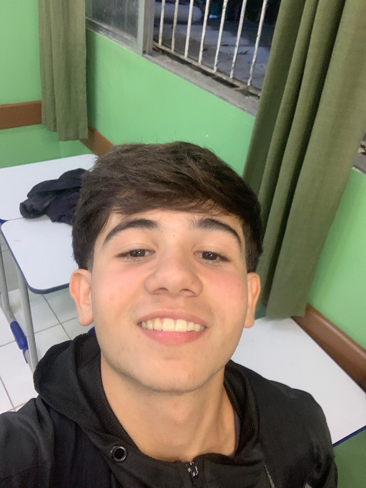
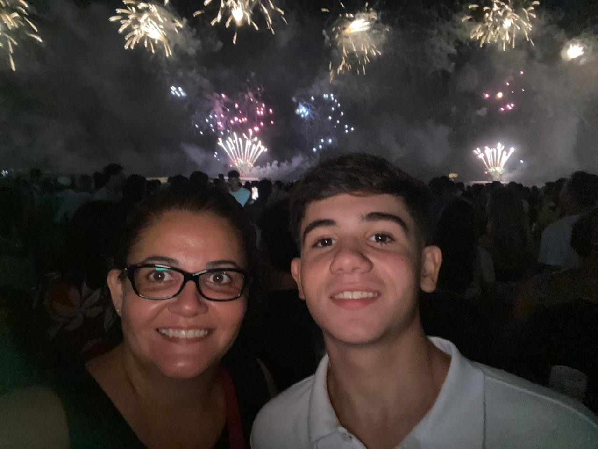
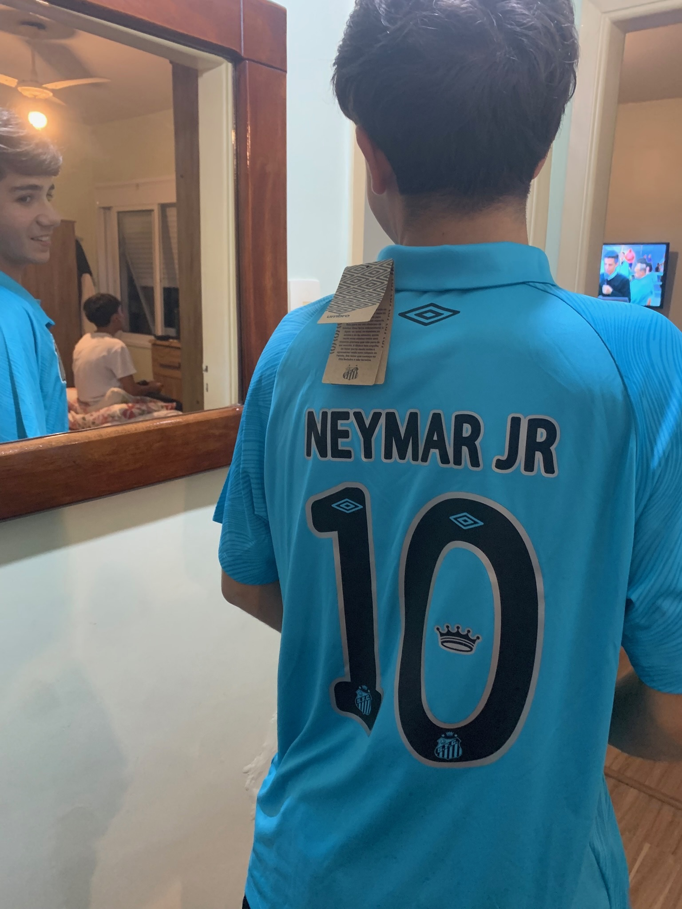
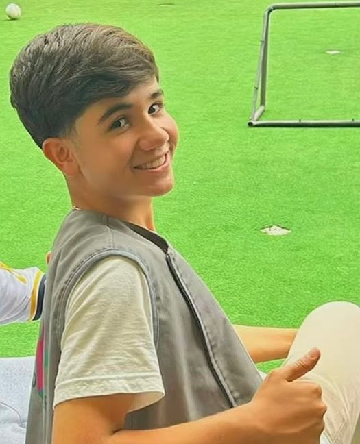

1° ANO · INFONET · ETECAF
Futuro Dev
Aluno do curso Técnico em Informática para Internet da ETEC Aristóteles Ferreira
Conhecer maisEu sou Eduardo Luis Pinho S. S., tenho 15 anos e estou no 1° ano de INFONET na ETECAF. Estou gostando muito do colégio, da rotina puxada, das pessoas e das visitas técnicas.
Sou uma pessoa muito tranquila. Gosto de sair com meus amigos, viajar, praticar esportes, jogar video game e assistir filmes e séries.Tudo isso me deixa muito feliz. Mas também sei que preciso estudar para ter um futuro melhor, e é por isso que estou aqui hoje.
Descobri a ETEC através dos meus professores, que diziam que com a ETEC teríamos um futuro melhor. Nunca gostei de estudar, sempre preferi sair, viajar e praticar esportes. Mas entendi que precisava preparar meu futuro.
Paguei mais de uma inscrição para a ETEC. A segunda inscrição com os cursos de TI foi por vontade da minha mãe, que é formada no IF e na faculdade. Era um plano B, caso eu não passasse em ADM.
1° — Administração, Escolástica Rosa
2° — Logística, Escolástica Rosa
1° — Téc. Informática para Internet AMS, Aristóteles Ferreira
2° — Desenvolvimento de Sistemas AMS, Aristóteles Ferreira
Acertei 40 questões de 50 no vestibulinho e passei na 1° chamada das duas opções! Fui parar na fila de ADM, mas minha mãe me convenceu na última hora a escolher INFONET. Saímos da fila e viemos para a ETECAF fazer a matrícula.
Hoje agradeço por ter vindo para o Aristóteles. Estou gostando muito do curso, das pessoas e da minha rotina estudando aqui. E no 3° ano, em vez de me matar no ENEM, vou me matar somente no TCC, caso eu tivesse escolido ADM não seria AMS, então eu iria me matar de estudar para o ENEM e para o TCC
Sou apaixonado por esportes. O futebol é meu favorito. Curto fazer qualquer esporte sem exceção, se me chamarem para ir desde surfar até ginástica por exemplo, se depender de mim eu topo na hora
Fora do colégio, Eu curto assistir séries e filmes, sair com meus amigos, jogar jogos de tabuleiros ou online, ir a praia e etc

Virada do ano na praia. Ela que me convenceu a ir para a ETECAF

Nascer, viver e no Santos morrer!
É um orgulho que nem todos podem ter

Uma foto minha